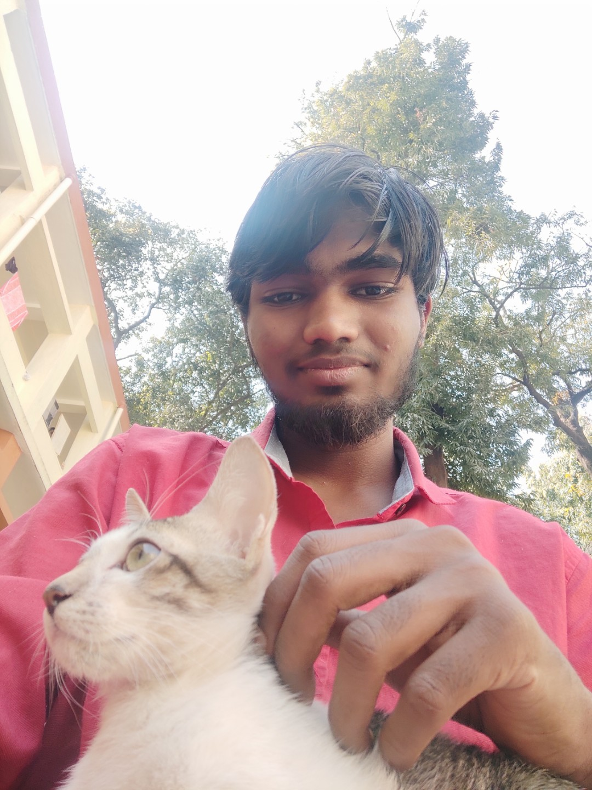
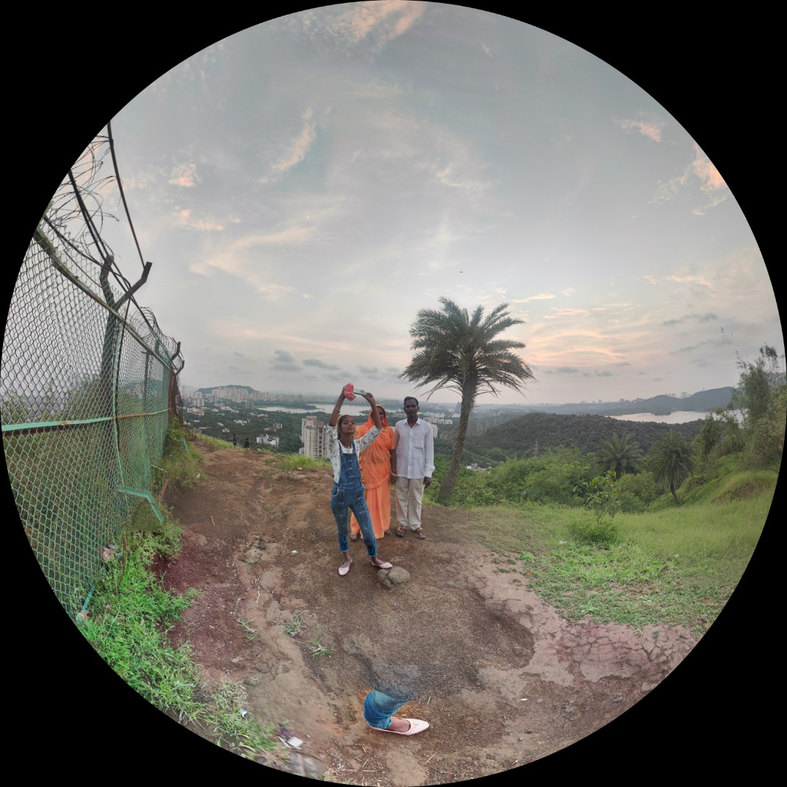
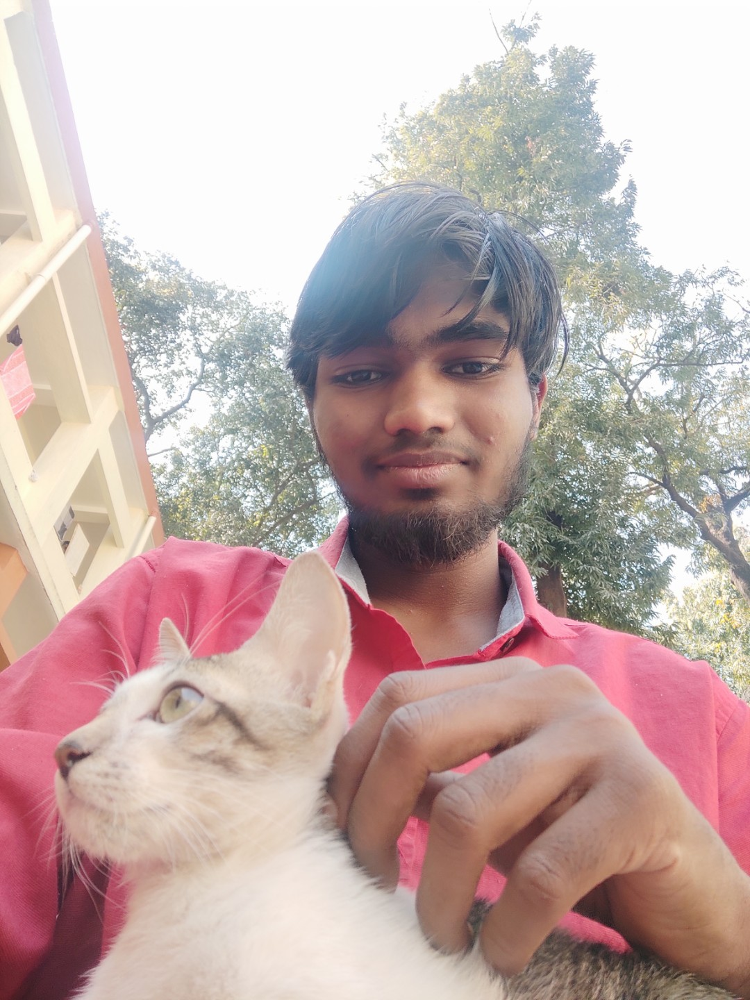
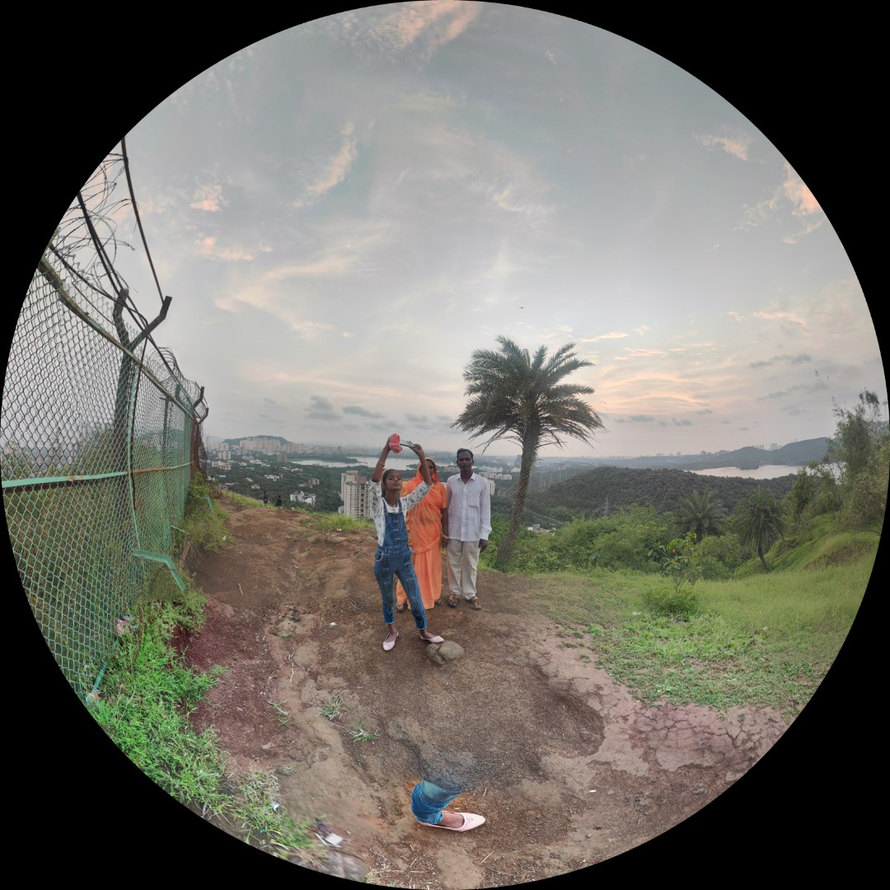

We approx 300 people have accepted the challenge to climb all over to the top of Maharashtra's highest peak Kalsubai.
And guess what, I was the first one to reach there, before anyone. Well that's what I can think of as I don't remember exactly. I must say, the journey was much better than I expected, all people there were enjoying the moments except me. As usual people wanted to capture themselves in their phones. So, I was holding them for them.
Well, I won't say I wasn't enjoying, their dance and singing capabilities, I must appreciate, as there is no parameter to define them either.
And, you know the reward of reaching was feeling the cold all over your body, it was raining like anything.
Usually I like to bath in the rain, but that day even a single drop was so cold that I won't dare to enjoying such high pricing moments.
That doesn't mean, I stopped either, that simply mean, most of the time I was under the umbrella's of other people.
 


